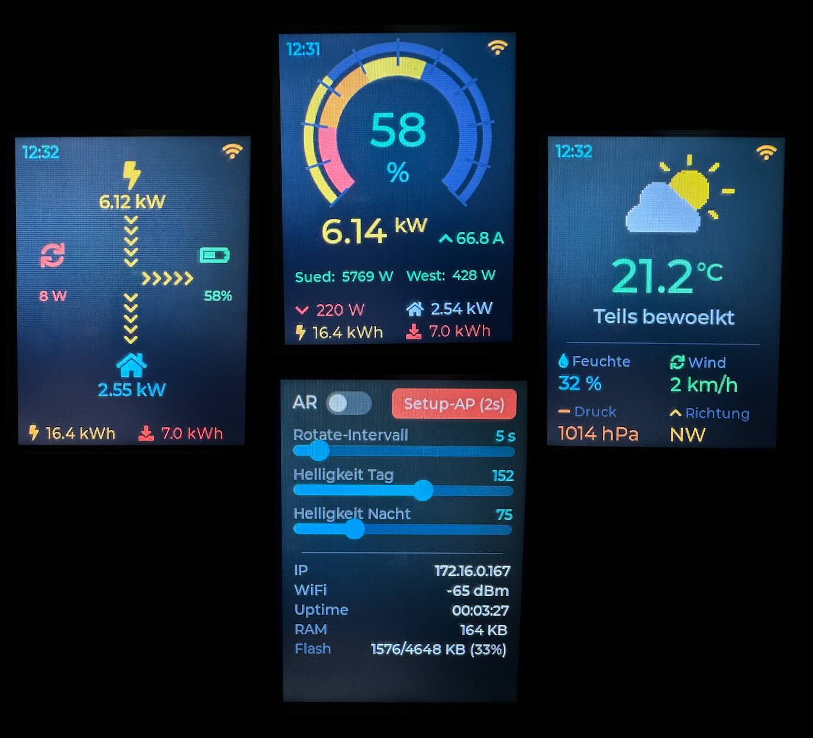

// Web Installer · ESP-Web-Tools · Chrome & Edge only

Solar-Display-Firmware für das ESP32-2432S028 (CYD). USB-Kabel anschließen, dann auf „Install" klicken. Der Display-Controller wird später im Web-Setup ausgewählt — eine Firmware für alle drei CYD-Varianten.
Das CYD ist ein günstiger ESP32 mit aufgelötetem 2.8"-Touchscreen (ca. 8–15 €). Erhältlich auf AliExpress, Amazon und bei seriösen Händlern. Achte auf die "2USB"-Variante mit USB-C und Micro-USB (besser zugänglicher Bootloader).
| Anschluss | Pins | Funktion |
|---|---|---|
| HSPI (Display) | 14, 13, 12, 2, 15 | Panel-SPI-Bus |
| VSPI (Touch) | 25, 32, 39, 33, 36 | XPT2046-Controller |
| Backlight | GPIO 21 | PWM-Helligkeit |
| BOOT-Taste | GPIO 0 | Setup-AP auslösen (3s halten) |
ⓘ Stromversorgung über USB · Sunsynk-Kommunikation läuft komplett über MQTT (kein direkter Anschluss am Wechselrichter)
Die Solar-Seite ist Hauptanzeige: ein großer Doppelring zeigt den Batteriezustand mit Rot→Gelb→Grün Farbverlauf, der äußere Ring den Tagesfortschritt der Photovoltaik relativ zum gesetzten Ziel.
Wischen links/rechts wechselt zwischen Solar und Wetter · nach unten öffnet die Settings · Helligkeit folgt automatisch dem Sonnenstand.
9 Topics werden im Display angezeigt. Das Beispiel-Präfix
SS/deye-12k/
ist im Web-Setup änderbar.
Reservierte Topics (für künftige Erweiterungen):
Wetter-Daten kommen als JSON von Home Assistant unter
wetter/koewa
(Topic im Setup änderbar). Beispielhafte HA-Automation und
Sunsynk-Schedules siehe README.